UNIT 2 · VOCABULARY
個人特徵
Personal characteristics
51 個單字聽・唸・用
本單元單字一覽
描述外表、心情、個性的形容詞，共 51 個。注意比較級的變化和 -ed／-ing 的差別。
beautifulblindcutefathandsomeheavyoldprettyshortslimtallthinuglyyoungangrybadboredboringbravebusycarefulcoolcrazyexcitedexcitingfamousfriendlyfunnygoodhappyhard-workinghonestinterestedkindlazylonelylovelymadnicepolitepoorproudrichsadscaredshysmartstupidsuccessfulunhappywise
每個字都有 🔊，先聽發音、跟著唸，再看例句。
單字 1–4
beautiful
美麗的adj.
What a beautiful sunset!
好美的夕陽！
🦮
blind
瞎的；失明的adj.
The blind man walks with a guide dog.
那位盲人和導盲犬一起走路。
cute
可愛的adj.
The puppy is so cute.
那隻小狗好可愛。
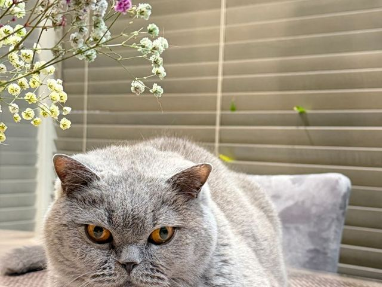
fat
胖的；肥的adj.
Our cat is getting fat. It eats too much.
我們的貓變胖了，牠吃太多了。
單字 5–8
handsome
英俊的adj.
Ken looks handsome in his new suit.
Ken 穿新西裝看起來很帥。
heavy
重的adj.
This box is too heavy for me to carry.
這個箱子太重了，我搬不動。
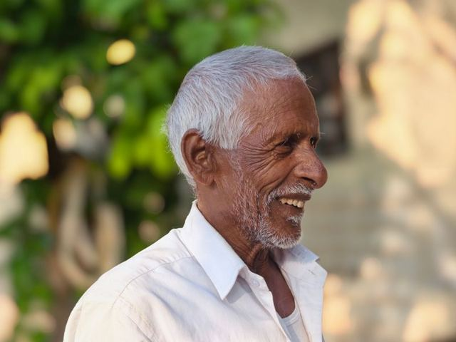
old
老的；舊的adj.
My grandpa is old, but he is still strong.
我爺爺年紀大了，但還是很健壯。
pretty
漂亮的adj.
Look at the pretty flowers in the garden.
看花園裡漂亮的花。
單字 9–12
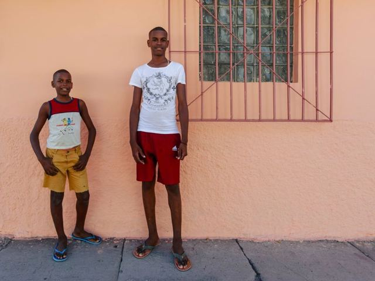
short
矮的；短的adj.
My little brother is short, but he runs fast.
我弟弟個子矮，但跑得很快。
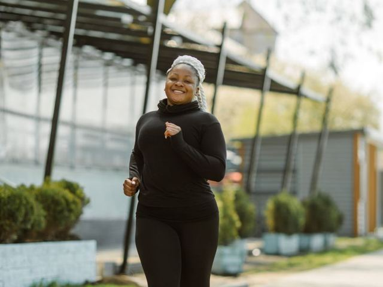
slim
苗條的adj.
She exercises every day to stay slim.
她每天運動保持苗條。
tall
高的adj.
Taipei 101 is a very tall building.
台北 101 是一棟很高的大樓。
📘
thin
瘦的；薄的adj.
The book is thin, so I can read it in a day.
這本書很薄，我一天就能讀完。
單字 13–16
ugly
醜的adj.
In the story, the ugly duckling became a swan.
故事裡，醜小鴨變成了天鵝。
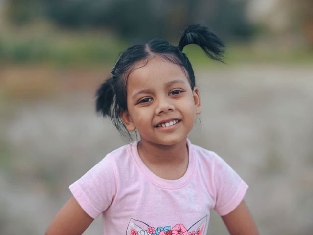
young
年輕的adj.
My aunt looks young for her age.
我阿姨看起來比實際年齡年輕。
angry
生氣的adj.
Mom was angry because I came home late.
媽媽生氣了，因為我很晚回家。
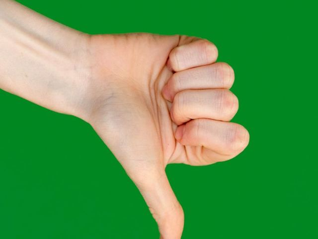
bad
壞的；不好的adj.
Eating too much sugar is bad for your teeth.
吃太多糖對牙齒不好。
單字 17–20
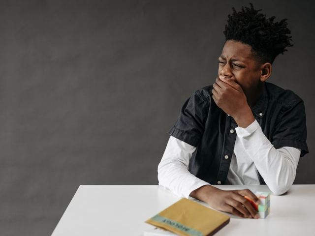
bored
感到無聊的adj.
I was bored, so I called my friend.
我覺得無聊，所以打電話給朋友。
boring
令人無聊的adj.
The movie was so boring that I fell asleep.
那部電影無聊到我睡著了。
brave
勇敢的adj.
The brave firefighter saved the little girl.
那位勇敢的消防員救了小女孩。
busy
忙碌的adj.
Dad is busy cooking dinner.
爸爸正忙著煮晚餐。
單字 21–24
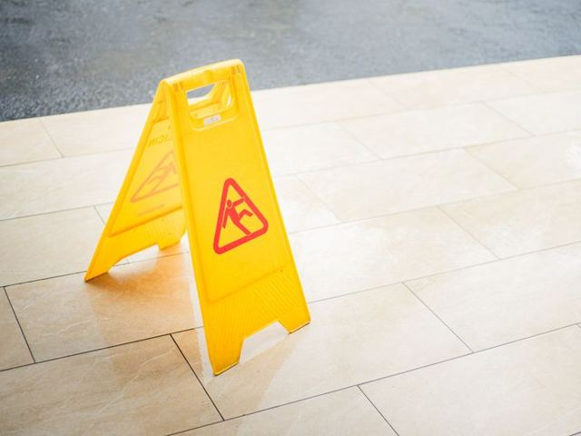
careful
小心的；仔細的adj.
Be careful! The floor is wet.
小心！地板是濕的。
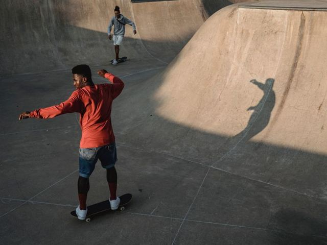
cool
涼爽的；很酷的adj.
Your new skateboard is really cool!
你的新滑板真的很酷！
crazy
瘋狂的；著迷的adj.
My sister is crazy about K-pop.
我妹妹很迷韓國流行音樂。
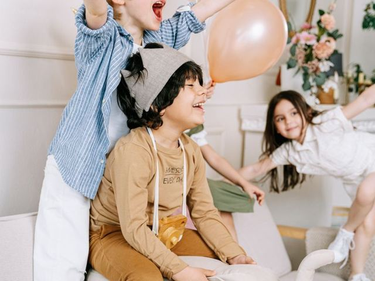
excited
感到興奮的adj.
The kids are excited about the trip.
孩子們對這趟旅行感到很興奮。
單字 25–28
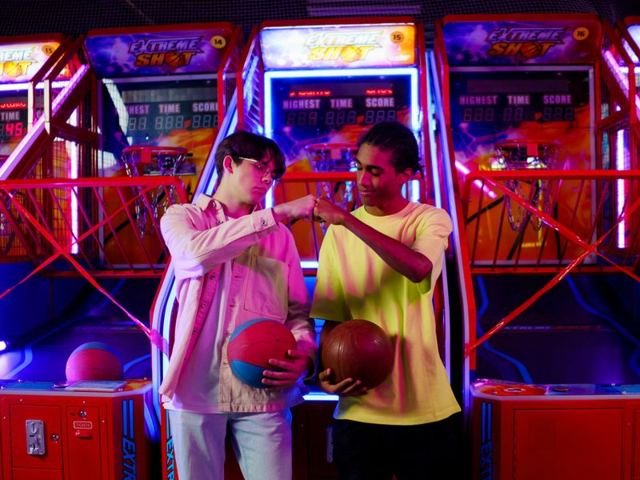
exciting
令人興奮的adj.
The basketball game was very exciting.
那場籃球賽非常刺激。
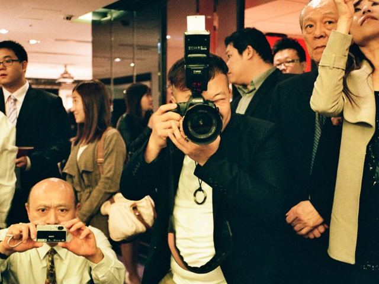
famous
著名的adj.
Tainan is famous for its snacks.
台南以小吃聞名。
🤝
friendly
友善的adj.
Our new neighbor is very friendly.
我們的新鄰居很友善。
funny
好笑的adj.
He told a funny story, and we all laughed.
他講了個好笑的故事，我們都笑了。
單字 29–32
good
好的adj.
Fruit is good for your health.
水果對健康有益。
happy
快樂的adj.
I am happy to see you again.
很高興再見到你。
hard-working
努力的；勤奮的adj.
She is a hard-working student.
她是個用功的學生。
🙋
honest
誠實的adj.
An honest person always tells the truth.
誠實的人總是說實話。
單字 33–36
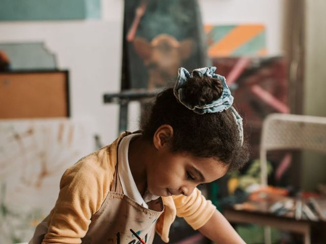
interested
感興趣的adj.
I am interested in drawing.
我對畫畫有興趣。
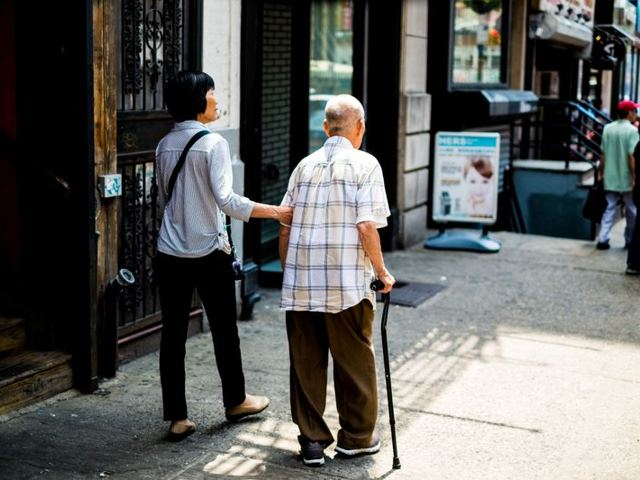
kind
親切的；和善的adj.
Ms. Lin is always kind to her students.
林老師對學生總是很親切。
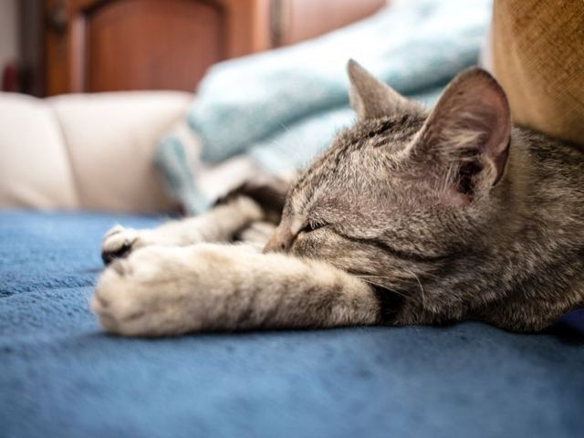
lazy
懶惰的adj.
Don't be lazy. Clean your room now.
別偷懶，現在去整理房間。
lonely
孤單的；寂寞的adj.
The old man lives alone and feels lonely.
那位老先生獨居，覺得很寂寞。
單字 37–40
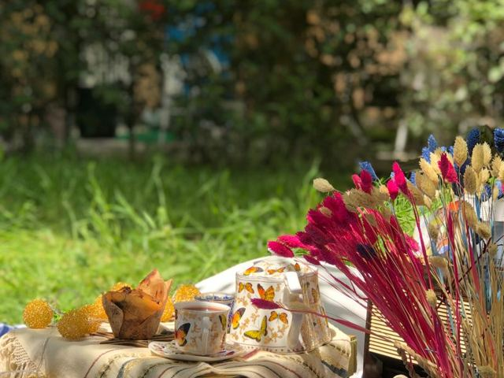
lovely
可愛的；美好的adj.
What a lovely day for a picnic!
真是適合野餐的好天氣！
mad
生氣的；瘋狂的adj.
Dad got mad when he saw the broken window.
爸爸看到破窗戶就發火了。
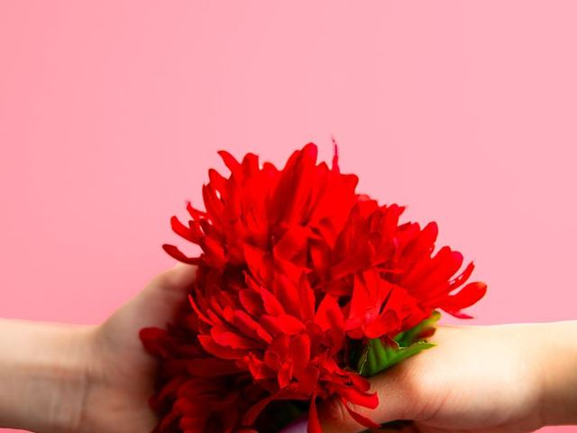
nice
好的；友善的adj.
It's nice of you to help me.
你人真好，還幫我。
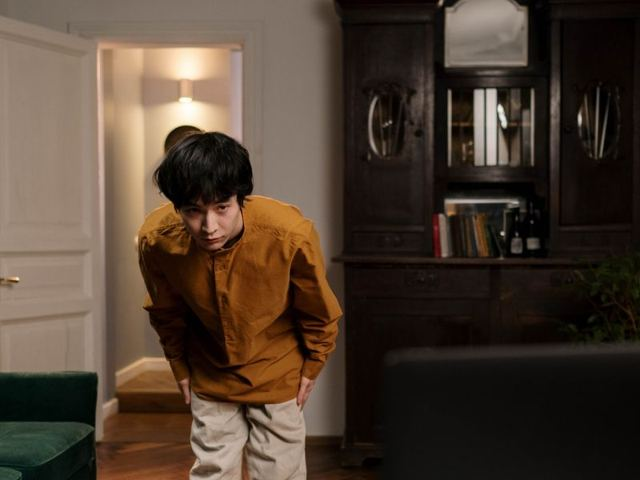
polite
有禮貌的adj.
It is polite to say "thank you."
說「謝謝」是有禮貌的。
單字 41–44
poor
貧窮的；差勁的adj.
He was poor, but he never gave up.
他很窮，但從不放棄。
proud
驕傲的；自豪的adj.
My parents are proud of me.
我爸媽以我為傲。
rich
富有的adj.
The rich man gave money to the school.
那位有錢人捐錢給學校。
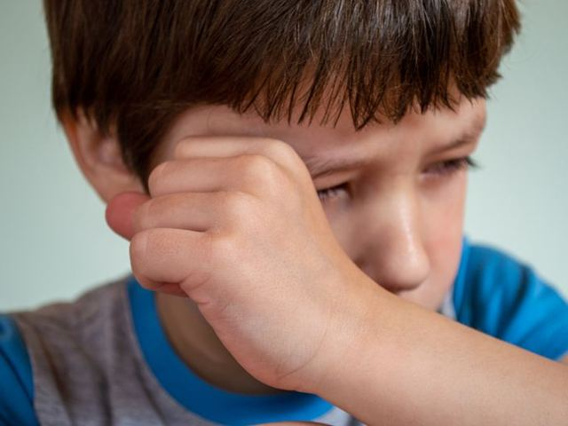
sad
悲傷的adj.
I feel sad when my friends move away.
朋友搬走時我很難過。
單字 45–48
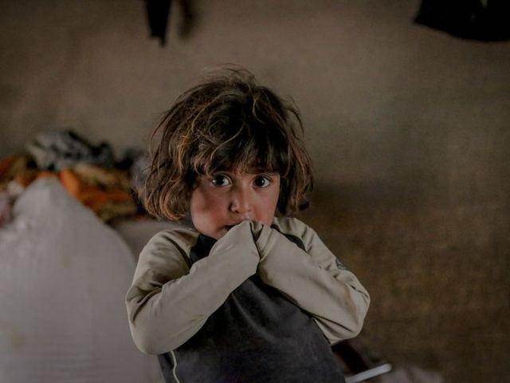
scared
害怕的adj.
My little sister is scared of the dark.
我妹妹怕黑。
shy
害羞的adj.
Amy is shy, so she doesn't talk much in class.
Amy 很害羞，上課不太說話。
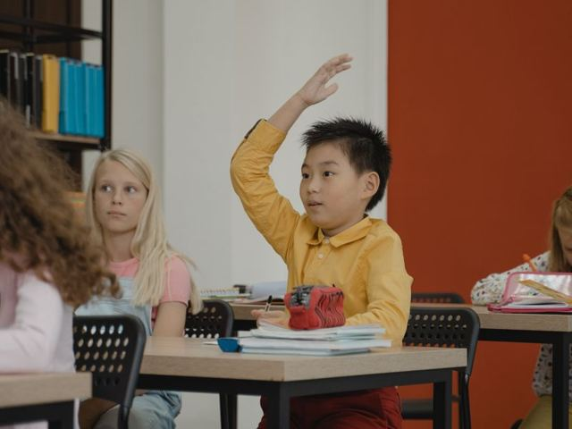
smart
聰明的adj.
The smart dog can open the door by itself.
那隻聰明的狗會自己開門。
🤦
stupid
愚蠢的adj.
It was stupid of me to forget my key.
我真蠢，竟然忘了帶鑰匙。
單字 49–51
🎉
successful
成功的adj.
She became a successful writer.
她成為一位成功的作家。
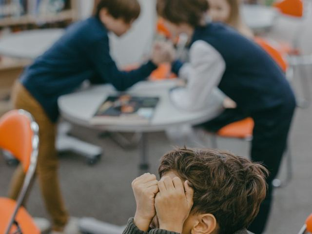
unhappy
不快樂的adj.
He was unhappy about his test score.
他對考試成績不滿意。
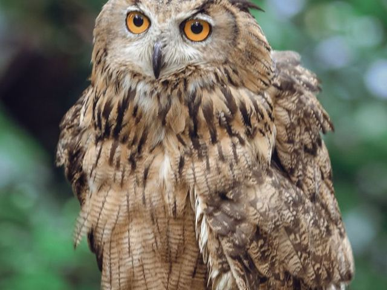
wise
有智慧的adj.
Grandma is wise. She always gives good advice.
奶奶很有智慧，總是給好建議。
不規則的比較級
| 原級 | 比較級 | 最高級 |
|---|
| good | better | best |
| bad | worse | worst |
| old | older | oldest |
大部分加 -er／-est；重複字尾 fat→fatter、thin→thinner、sad→sadder；子音+y 改 i：happy→happier；多音節用 more：more beautiful。詳見文法 Unit 10。
-ed 和 -ing：誰的感覺？
| 人「感到」(-ed) | 事物「令人」(-ing) |
|---|
| bored | boring |
| excited | exciting |
| interested | interesting |
I am bored. → The movie is boring. 詳見文法 Unit 5。
快問快答：中文 → 英文
1美麗的beautiful
2胖的；肥的fat
3老的；舊的old
4苗條的slim
5醜的ugly
6壞的；不好的bad
7勇敢的brave
8涼爽的；很酷的cool
快問快答：英文 → 中文
1exciting令人興奮的
2funny好笑的
3hard-working努力的；勤奮的
4kind親切的；和善的
5lovely可愛的；美好的
6polite有禮貌的
7rich富有的
8shy害羞的
學完了！接下來
複習方法
review
- 回到「📗 單字卡」，按「遮中文」自己考自己
- 再按「遮英文」，看中文說出英文
- 每個例句跟著 🔊 唸一次
準備好了
- 按右上角「📝 前往測驗」
- 測驗錯的題目要訂正到全對
- 訂正完成補送 1 點